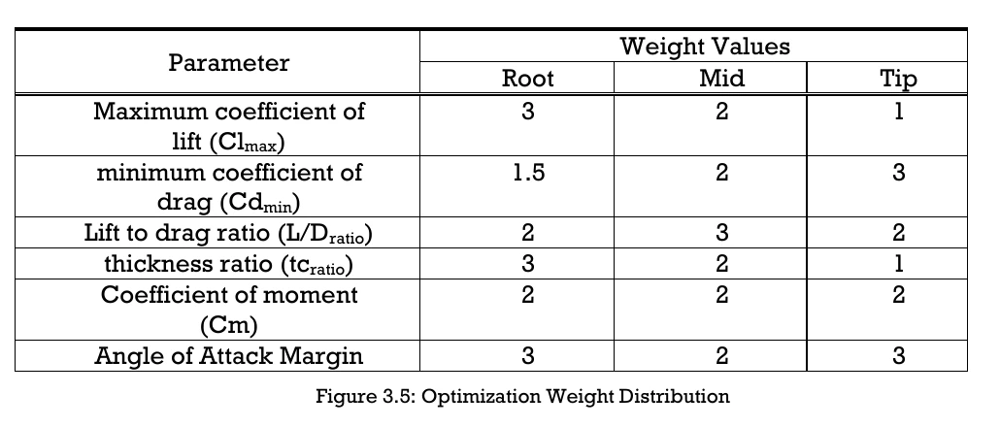
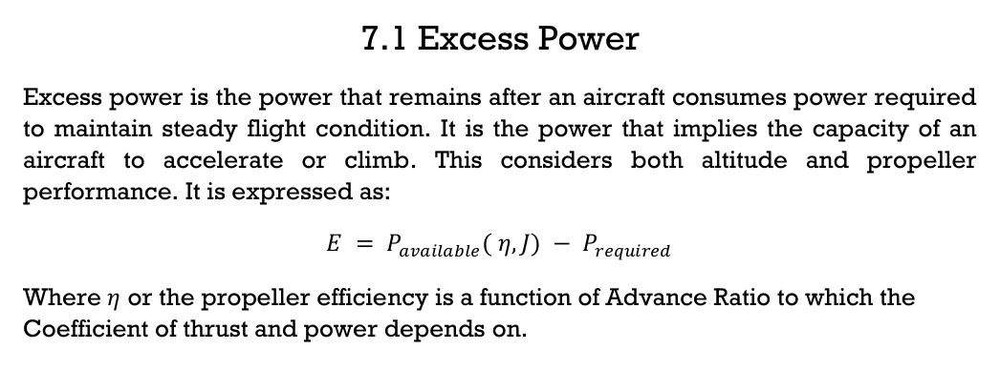
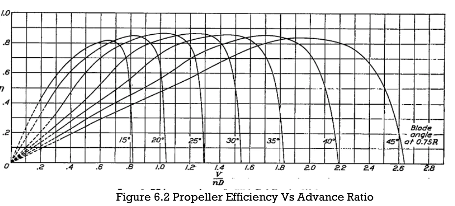
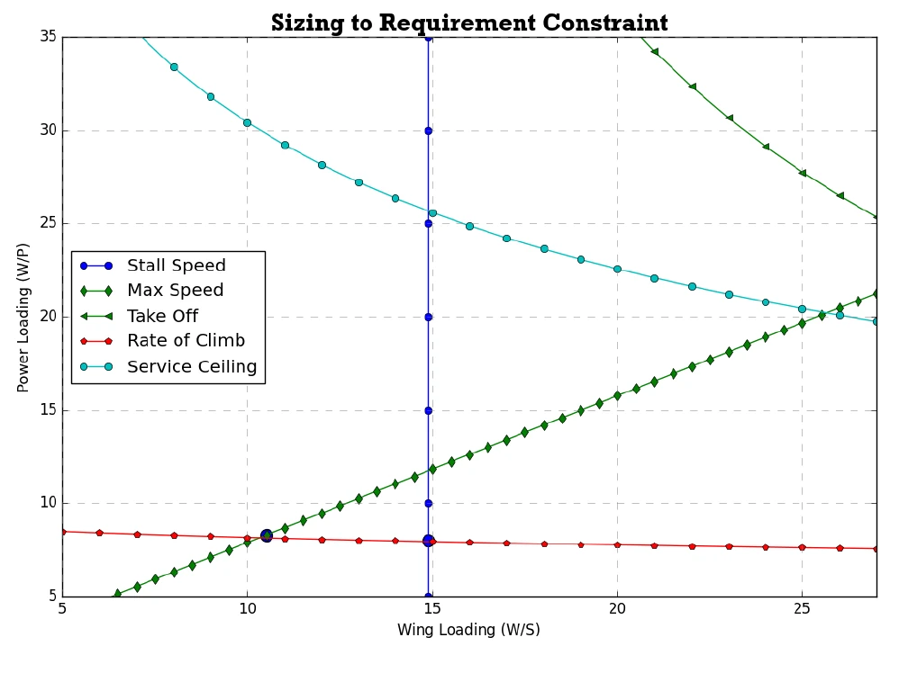
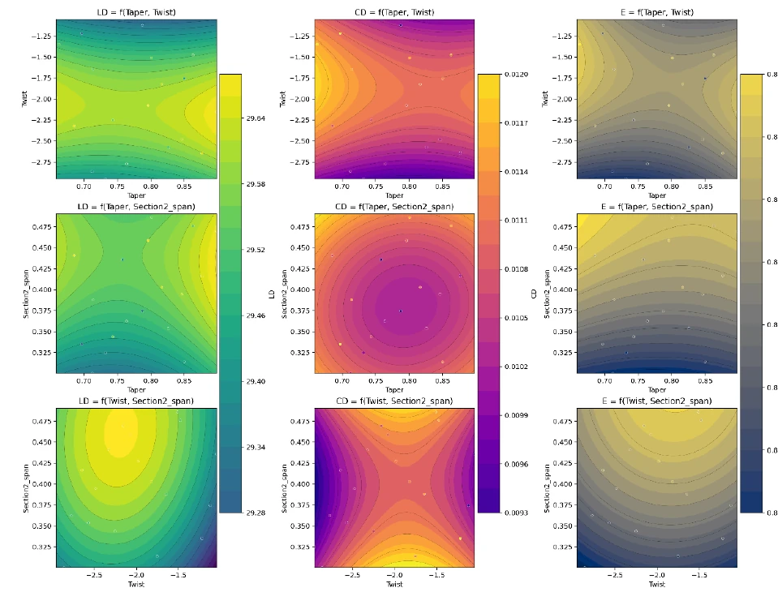

EDUCATION
Bachelor of Science
in Aeronautical Engineering
Mats College of Technology · 2026
CAD PORTFOLIO TEACHING APPLICATION
A collection of CAD models, technical drawings, and digital projects—presented with the process behind the final form.
ABOUT / AERONAUTICAL ENGINEERING
I’m Rexus Bryan L. Gan, an aeronautical engineering graduate focused on CAD, aircraft design, and making technical ideas easier to understand.
I develop conceptual aircraft and UAV designs, use Python to streamline early design calculations, and present engineering work through parametric models, simulation, and interactive learning tools. I’m especially interested in teaching practical, open-source CAD workflows.
EDUCATION
Mats College of Technology · 2026
ENGINEERING FOCUS
LEADERSHIP
Education and Research Director, SAEP SCF and MAESO
01 — SELECTED WORK
Explore the model, then look closer at the drawing sheets that explain how it comes together.
A multi-part aircraft model paired with 3D, front, side, and top-view technical drawings.
AIRCRAFT DESIGN / ANALYSIS
GANNET-T731 is a trainer-aircraft concept developed from client-defined performance requirements. The design study connects requirement-based sizing with propeller performance, weighted airfoil selection, and aerodynamic wing optimization.
01 / AIRFOIL SELECTION
I assigned custom weights to maximum lift, minimum drag, lift-to-drag ratio, thickness, pitching moment, and angle-of-attack margin. The criteria were weighted by wing section to compare candidate airfoils against both aerodynamic performance and the thickness needed at the root.

02 / PROPELLER & EXCESS POWER
The study expresses excess power as available power minus required power, with available power dependent on propeller efficiency and advance ratio. The efficiency curve shows how efficiency varies with advance ratio for different blade angles, linking the propeller model to the aircraft’s performance calculations.


03 / REQUIREMENT-BASED SIZING
Stall speed, maximum speed, take-off, rate of climb, and service-ceiling requirements are expressed as constraints on power loading versus wing loading. The report identifies the intersections as sizing limits and reports a maximum allowable wing loading of 14.89 lbf/ft² and maximum power loading of 8.28 lbf/hp under their respective constraints.

04 / WING OPTIMIZATION
Response Surface Methodology was used to compare taper ratio, wing twist, and section span distribution across aerodynamic responses. The report’s R² analysis identifies twist and section span distribution as the dominant parameters, while taper ratio has a secondary and less consistent influence in this study.

TECHNICAL DRAWINGS
01 / AIRCRAFT / GANNET XT0731
Assembly, elevation, and plan sheets
02 / MECHANISM STUDY
Exploded and assembled views
03 / PART STUDIES
Dimensioned component drawings
02 — DESIGN WORKFLOW
This portfolio follows a practical engineering workflow: build aircraft geometry, evaluate aerodynamic performance, and communicate results clearly. The tools shown here support each stage, from 3D modeling and simulation to technical documents and organized data.
03 — OTHER PROJECTS
A collection of aerodynamic studies, aircraft concepts, UAV design, and digital work.
ANIMATION / DEMONSTRATIONS
Short demonstrations of Blender scripting and propeller concept visualization.
BLENDER / PYTHON
A short animation demonstrating a Python script that automates importing pictures into a Blender scene.
OPEN FACEBOOK REELPROPULSION / BLENDER
A Blender animation featuring the rim-driven propeller as the product concept for a project.
OPEN ON YOUTUBEAIRCRAFT / RECOGNITION
Explore the animated aircraft, then see the design work recognized across three disciplines.
A PORTFOLIO FOR WHAT'S NEXT